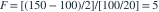

正态同方差回归的两个模型相互嵌套，均含截距。完整模型有 4 个解释变量，简化模型对完整模型施加 2 个独立线性约束。样本量 25，完整与简化模型的残差平方和分别为 100 和 150。给定  ，检验这些约束的结论为哪项？
，检验这些约束的结论为哪项？
，检验这些约束的结论为哪项？- AF=2.5，拒绝约束
- BF=2.5，不拒绝约束
- CF=5，不拒绝约束
- DF=5，拒绝约束
我已思考，展开答案与解析
正确答案：D
- 完整模型残差自由度为 ，约束数为 2。

。- ，在 5% 水平下拒绝这两个约束同时成立的原假设。
易错提醒F 检验的分母使用完整模型的残差均方。
原模拟卷 A · 模拟卷 A 第 48 题
原创